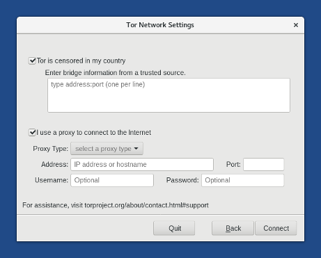

Cette version corrige plusieurs failles de sécurité et la mise à jour doit être faite dès que possible.
Changements
Nouvelles fonctionnalités
Tor redesigned Tor Launcher, the application to configure a Tor bridge or a local proxy.

Mises à jour et changements
Mise à jour du Navigateur Tor vers la version 7.5.
Mise à jour de Linux vers la version 4.14.13 et le microcode de AMD pour atténuer Spectre.
Mise à jour de Thunderbird vers la version 52.5.
Problèmes corrigés
Correction de l'impression de PDF dans le Navigateur Tor. (#13403 et #15024)
Correction de l'ouverture du menu Applications lorsque la synchronisation de l'heure ramène l'horloge dans le passé. (#14250)
Correction de l'ouverture de la documentation embarquée dans Tails pour plusieurs langues autres que l'anglais. (#15160)
Correction de la traduction des notifications sur la synchronisation du temps et "Tor est prêt". (#13437)
Suppression du code pour migrer depuis Claws Mail qui empêchait Thunderbird de démarrer dans certains cas. (#12734)
Pour plus de détails, lisez notre liste des changements.
Problèmes connus
Des messages d'erreur et de debug apparaissent lors du démarrage de Tails, incluant un message alarmant à propos d'un kernel BUG.
Ces messages n'affectent pas la sécurité de Tails.

Dans l'Installeur de Tails, lorsque l'on choisit Utiliser une image ISO Tails téléchargée, il est seulement possible de sélectionner une image ISO quand Tails fonctionne en anglais. Dans les autres langues, le bouton de choix du fichier reste inactif :

La documentation embarquée dans Tails ne s'ouvre plus avec le Navigateur Tor. Il manque également le design graphique de la page d'avertissement du Navigateur non-sécurisé. (#14962 et Tor #24243)
Voir la liste des problèmes connus de longue date.
Obtenir Tails 3.5
Pour l'installer, suivez nos instructions d'installation.
Pour mettre à jour, des mises à jour automatiques sont disponibles depuis les versions 3.3 et 3.4 vers la version 3.5.
Si vous ne pouvez pas faire une mise à jour automatique ou si le démarrage échoue après une mise à jour automatique, merci d'essayer de faire une mise à jour manuelle.
Et ensuite ?
Tails 3.6 est prévu pour le 13 mars.
Jetez un œil à notre feuille de route pour savoir ce que nous avons en tête.
Nous avons besoin de votre aide et il y a de nombreuses manières de contribuer à Tails (faire un don est seulement l'une d'entre elles). Venez discuter avec nous !